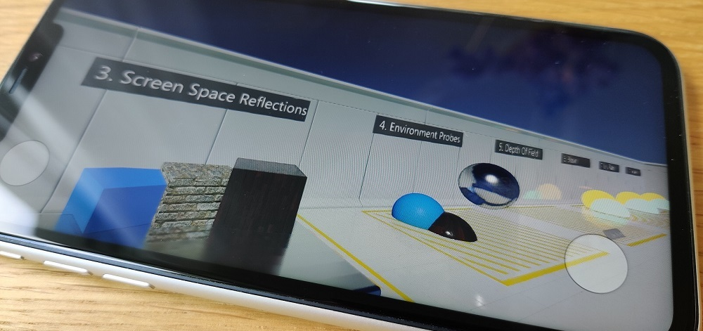
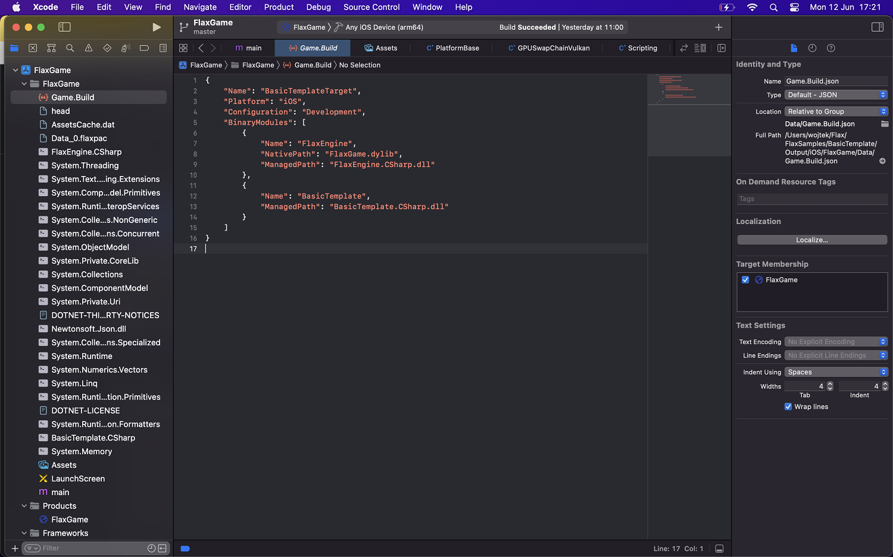
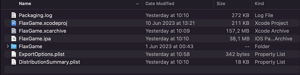

iOS

Technical information
Flax supports iOS 14 or newer. For graphics rendering Vulkan is used via MoltenVK to run on Metal.
iOS doesn't allow dynamic code execution thus Flax uses AOT in order to precompile C# code into native.
iOS Setup
Follow these steps to setup your development PC for building game for iOS platform. In case of problems, please follow official documentation of iOS platform.
- Setup Apple Developer account (including certificates and provision profiles for a game)
- Install XCode
- Install .Net iOS Workload
- Run
dotnet workload install iosvia command line - More info: https://learn.microsoft.com/en-us/dotnet/core/tools/dotnet-workload-install
- Run
- Build and run Flax Editor on Mac (https://github.com/FlaxEngine/FlaxEngine)
Troubleshooting
- If you're getting the error
Missing NET SDK runtime for iOS ARM64.then install iOS workload for dotnet (as mentioned above). It contains .Net libs, tools and runtime for iOS required to run C#. - To access game logs you can easily run the app from XCode project and insect the process output (from
NSLog). - iOS doesn't allow dynamic code execution thus Flax uses AOT in order to precompile C# code into native.
XCode Project

When building a game for iOS, Flax will compile game code and cook content files into the XCode project that can be used to deploy and test on iOS devices. If Skip Packaging option is disabled in Build Settings, then the Editor will also archive and export the game into a .ipa package which can be uploaded to the App Store for distribution.

To learn how to set up Apple Developer for the app building, testing, and distributing see the official documentation.
Build options
| Property | Description | ||||||||
|---|---|---|---|---|---|---|---|---|---|
| Output | The built game output folder (relative to the project). | ||||||||
| Show Output | If checked, after building the output folder will be shown in an Explorer. | ||||||||
| Configuration Mode | Game building mode. Possible options:
|
Platform settings
| Property | Description |
|---|---|
| App Identifier | The app identifier (reversed DNS, eg. com.company.product). Custom tokens: ${PROJECT_NAME}, ${COMPANY_NAME}. |
| App Team Id | The app developer name - App Store Team ID. For example: VG6K6HT8B. |
| App Version | The app version number (matches CURRENT_PROJECT_VERSION in XCode). |
| Export Method | The app export mode (if automatic packaging is not disabled via Build Settings, otherwise export app manually via XCode project). |
| Textures Quality | The output textures quality (compression). |
| Supported Interface Orientations (iPhone) | The UI interface orientation modes supported on iPhone devices. |
| Supported Interface Orientations (iPad) | The UI interface orientation modes supported on iPad devices. |
| Override Icon | Custom icon texture to use for the application (overrides the default one). |